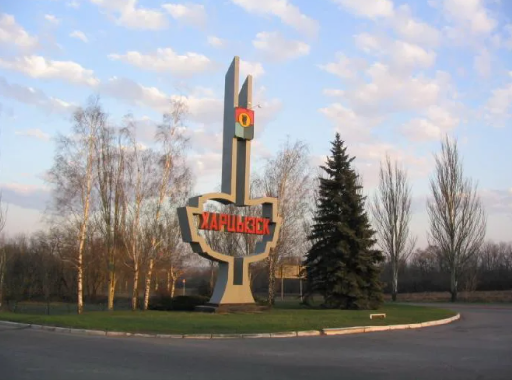
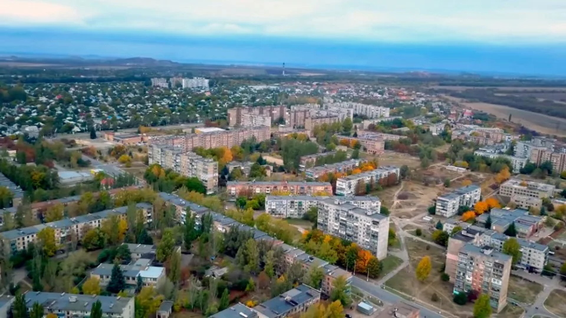
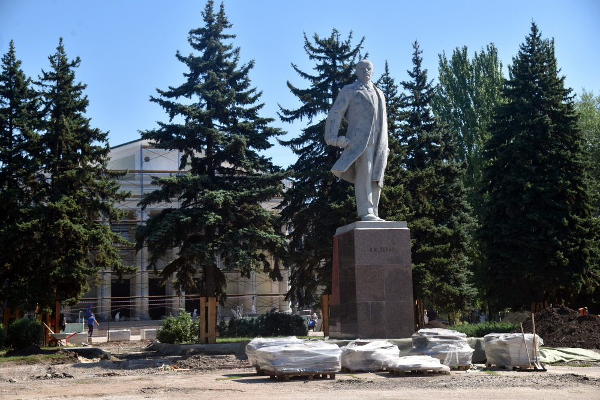
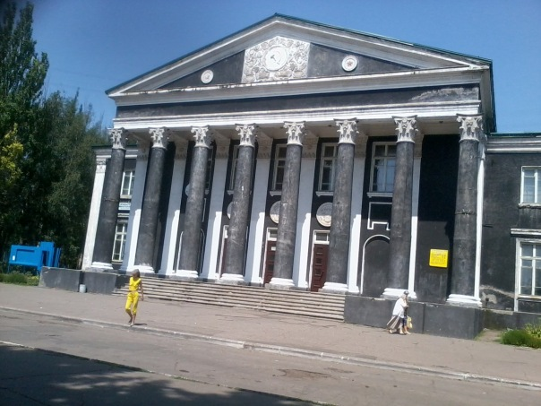
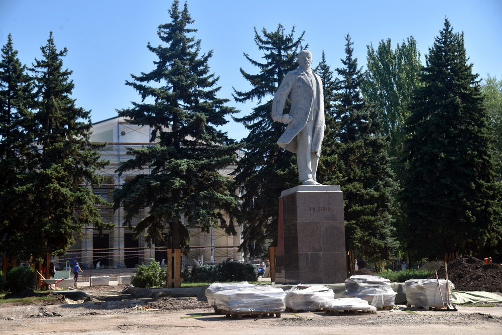
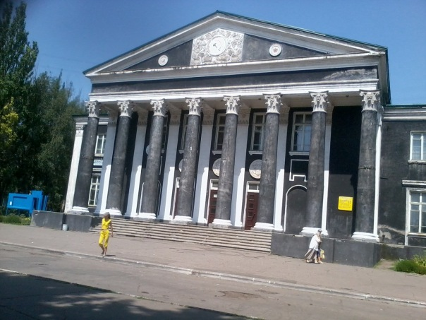
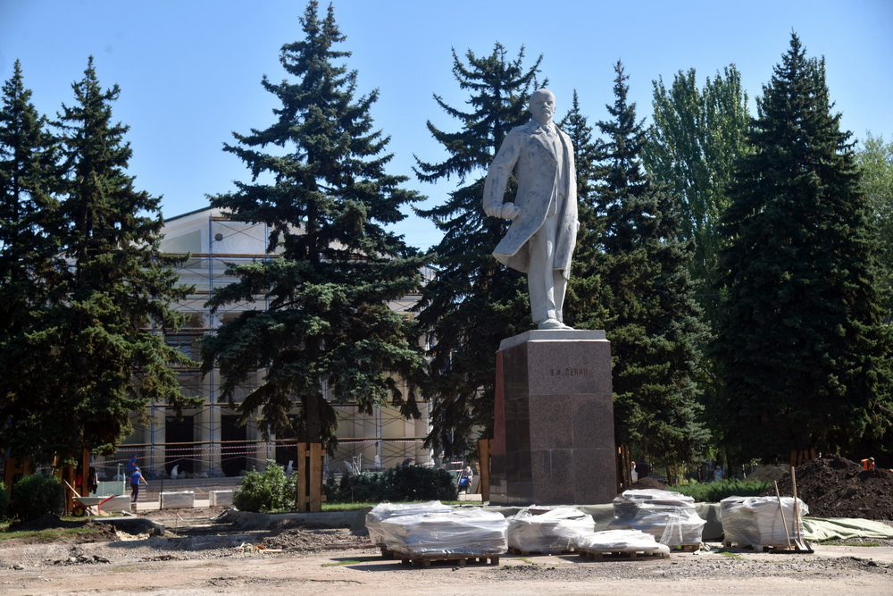
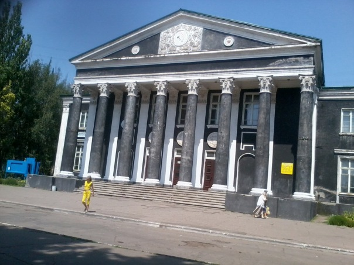

Информация о городе Харцызск
Харцызск — город в Донецком районе Донецкой области Украины. Административный центр Харцызской городской общины (по административно-териториальному устройству Украины). С 2014 года город контролируется Донецкой Народной Республикой.
Последние события
- Событие 1: Детей реабилитационного центра Харцызск поздравили с Днем Святого Николая 19 декабря в медучреждении «Реабилитационного центра смешанного типа для инвалидов и детей-инвалидов» пришли в гости сотрудники городского Дворца культуры, чтобы поздравить подопечных центра с праздником. Для ребят провели игровую программу, в которой они поучаствовали. На мероприятии присутствовала замглавы округа Елена Герасимович, которая также обратилась с поздравлениями и подарками.
- Событие 2: В Харцызской городской больнице прошло предновогоднее мероприятие 19 декабря маленькие пациенты Центральной Городской больницы получили сладкие подарки от Деда Мороза.
- Событие 3: Юнармейцы Харцызска приготовили новогодние открытки для военнослужащих 18 декабря юнармейцы военно-патриотического клуба «Орленок» лицея «Интеллект» своими руками создали новогодние открытки для военнослужащих.
Фотографии города


 




